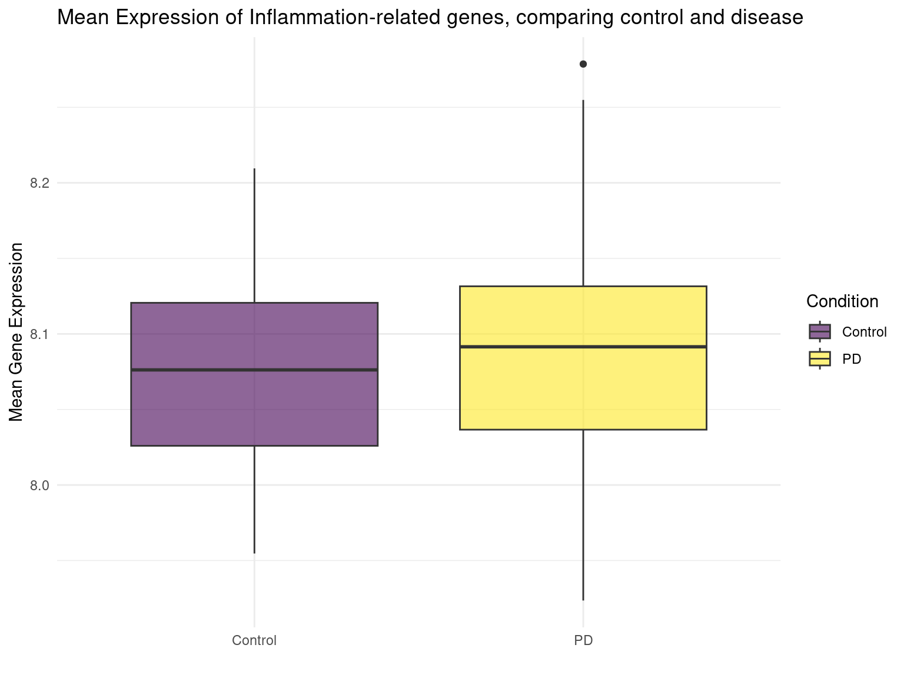

library(tidyverse)
library(viridis)
library(ggplot2)title: “Analysis 1 - Expression in Gene Sets” author: - Rune Daucke (runda, s165493) - David Faurdal (dalofa, s144523) - Luisa Weisch (s233028) date: 12/02-2024 format: html: embed-resources: true editor: visual editor_options: chunk_output_type: console
Expression in Gene Sets
Load Libraries and Augmented Data
df <- read_tsv("../data/03_dat_aug.tsv")In 03_augmentation.qmd, we calculated the mean gene expression for set of genes. In the following code we will analyse the results
Visualize
Different Expression of Gene Sets
In 03_augment.qmd we calculated the mean of some gene sets. #### Distribution and Boxplot
In the following chunks we compare the expression levels using density plots and boxplots. ##### Neurodegenerative Gene Set
# Plotting distribution
ggplot(data = df,
aes(x = ndg_mean,
fill = Condition)) +
geom_density(alpha = 0.5) + # alpha controls transparency
labs(title = "Density Plot for Neurodegenerative Genes",
x = "Gene Expression",
y = "Density") +
scale_fill_manual(values = c("Control" = "blue", "PD" = "red")) +
theme_minimal()ggsave("../results/07_neurodeg_density.png", width = 8, height = 6, dpi = 600, bg = "white")
df %>%
ggplot(aes(x=Condition, y=ndg_mean, fill=Condition)) +
geom_boxplot() +
scale_fill_viridis(discrete = TRUE, alpha=0.6) +
labs(y = "Mean Gene Expression") +
theme(
legend.position="none",
plot.title = element_text(size=11)
) +
ggtitle("Expression of neurodegenerative-associated genes, comparing control with disease") +
xlab("") +
theme_minimal()ggsave("../results/07_neurodeg_boxplot.png", width = 8, height = 6, dpi = 600, bg = "white")Pro-inflammatory cytokines and chemokines
# Plotting distribution
ggplot(df, aes(x = inflam_mean, fill = Condition)) +
geom_density(alpha = 0.5) + # alpha controls transparency
labs(title = "Density Plot for Pro-Inflamatory Cytokines",
x = "Gene Expression", y = "Density") +
scale_fill_manual(values = c("Control" = "blue", "PD" = "red")) +
theme_minimal()ggsave("../results/07_inflammatory_density.png", width = 8, height = 6, dpi = 600, bg="white")
# Boxplot
df %>%
ggplot(aes(x=Condition, y=inflam_mean, fill=Condition)) +
geom_boxplot() +
scale_fill_viridis(discrete = TRUE, alpha=0.6) +
labs(y = "Mean Gene Expression") +
theme(
legend.position="none",
plot.title = element_text(size=11)
) +
ggtitle("Mean Expression of Inflammation-related genes, comparing control and disease") +
xlab("") +
theme_minimal()
ggsave("../results/07_inflammatory_boxplot.png", width = 8, height = 6, dpi = 600, bg = "white")Interpretation - Statistical relevance
In the first boxplot, showing the different mean expression level for neurodegenerative-associated genes, a slight difference is visible. The second boxplot already shows less difference. The plots are a good and quick way to understand the data better, but if there is a significant difference is hard to see, so in the next chunk we look at the statistical relevance of the difference, by calculating the p-value.
t_test_result <- t.test(ndg_mean ~ Condition, data = df)
print(t_test_result)
Welch Two Sample t-test
data: ndg_mean by Condition
t = -0.94302, df = 40.909, p-value = 0.3512
alternative hypothesis: true difference in means between group Control and group PD is not equal to 0
95 percent confidence interval:
-0.24801228 0.09012837
sample estimates:
mean in group Control mean in group PD
8.305568 8.384510 t_test_result <- t.test(inflam_mean ~ Condition, data = df)
print(t_test_result)
Welch Two Sample t-test
data: inflam_mean by Condition
t = -0.94823, df = 45.989, p-value = 0.348
alternative hypothesis: true difference in means between group Control and group PD is not equal to 0
95 percent confidence interval:
-0.06496395 0.02335791
sample estimates:
mean in group Control mean in group PD
8.072247 8.093050 Both test showed us that there is no statistical relevance, with the p value being even higher then 0.3, and 0 being included in the 95% confidence interval.